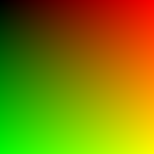
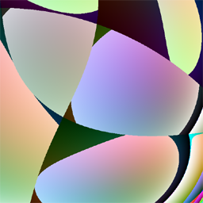

Algorithmus
Der Ex-c't-Redakteur Jörn Loviscach, der mittlerweile als Mathe-Professor tätig ist, hat 1995 einen hübschen Algorithmus ausgetüftelt, der Grafiken berechnet, die an moderne Kunst à la Kandinsky, Macke oder Malewitsch erinnern. Die meisten damit generierten Bilder haben kubistische Züge, und deshalb hat er das Programm Qbist genannt [1].
Leider geht die seinerzeit für Windows 95/NT und Mac OS entstandene Software auch auf aktuellen Rechnern recht gemächlich zu Werke. Mir stellte sich angesichts der in moderne Browser integrierten JavaScript-Compiler die Frage, wie schnell die Bilder wohl in einer Web-Anwendung auf dem Bildschirm erscheinen. Herausgekommen ist Qbist 2.0. Sie nutzt drei aktuelle Techniken zur Darstellung: paralleles JavaScript mit Web Workern, das Native Client SDK für Chrome und WebGL [2, 3, 4].
 Qbist wendet auf den RGB-Wert jedes Pixels dieses Farbverlaufs bis zu 36 Transformationen an.  Eins der (8·6·6·6)36 = 3,56·10118 möglichen Resultate der Transformationen. Und so funktioniert der Algorithmus: Ausgehend von einem rechteckigen Bild beliebigen Ausmaßes mit einem Farbverlauf, bei dem der Rotanteil nach rechts von Schwarz bis zur Vollfarbe und der Grünanteil analog dazu nach unten wächst (siehe nebenstehendes Bild), wendet der Qbist-Algorithmus auf jedes Pixel eine Reihe von Farbraumtransformationen an. Zu Beginn einer Transformationssequenz lädt er sechs Register mit dem jeweiligen R- und G-Wert des Pixels, der B-Wert wächst proportional mit der Registernummer. Eine einzelne Transformation wählt den RGB-Wert von ein oder zwei Registern aus, verknüpft sie miteinander und schreibt sie in ein drittes Register. Es gibt acht verschiedene Verknüpfungen, etwa die Multiplikation, das zirkuläre Vertauschen der RGB-Komponenten oder Addition/Subtraktion. Nach 36 Transformationen bestimmt der RGB-Wert im Register 0 die Farbe des resultierenden Pixels. Der Parametersatz für eine Transformationssequenz besteht demnach aus vier Arrays (Transformation, Zielregister, zwei Quellregister) mit je 36 Elementen.
Bedienung
Beim Laden der Webseite und bei Klicken auf “zurücksetzen” werden die Arrays mit Zufallswerten befüllt. Den Parametersatz des Bildes links oben in der Web-Anwendung kann man im JSON-Format aus dem Eingabefeld unten herauskopieren. Der umgekehrte Weg funktioniert ebenfalls, ein Klick auf “importieren” lädt den Parametersatz aus dem Textfeld in die Anwendung — Weitergeben und Tauschen ausdrücklich erwünscht. Die Parameter besonders gelungener Bilder kann man unter einem frei wählbaren Namen lokal im Browser speichern. Sie erscheinen danach in der Auswahlliste unten. Die Parametersätze aus dem c't-Artikel von 1995 sind darin bereits vorgegeben. Die damals im Originalprogramm und mit dem Plug-in für die Open-Source-Bildbearbeitungssoftware Gimp in Dateien mit der Endung “.qbe” gespeicherten Parametersätze lassen sich auch heute noch verwenden. Dazu zieht man einfach eine solche Datei auf das Eingabefeld. Die darin enthaltenen Parameter werden automatisch importiert. Das funktioniert auch mit auf “.json” oder “.txt” endenden Textdateien, die einen Parametersatz im JSON-Format enthalten.
Wählt man in der Beispielanwendung ein Bild durch Klicken aus, verwendet Qbist dessen Parametersatz als Grundlage für die Variationen. Für jede Variation setzt es pro Array eine vorgegebene Anzahl von Elementen auf Zufallswerte. Wie stark die damit einhergehende Abweichung vom Original sein soll, lässt sich über die Auswahlliste im Menü oben einstellen.
Statt des Farbverlaufs als Ausgangswert für die Transformationen kann man auch ein Bild vom Typ PNG, JPG oder GIF verwenden. Dazu zieht man die Bilddatei einfach auf eine der Variationen und lässt sie dort fallen. Mit der Auswahlliste “Filter” bestimmt man den Modus, nach dem Bilddatei und Farbverlauf in die Belegung der Register eingehen: ”überschreiben” ignoriert die Bildinformationen, “kopieren” berücksichtigt ausschließlich das Bild, bei “multiplizieren”, “addieren“ und “subtrahieren” verknüpft Qbist die RGB-Werte der Pixel von Bild und Farbverlauf mit den entsprechenden arithmetischen Operationen.
Links oben in jedem Bild sind zwei Knöpfe zu sehen. Mit dem linken überträgt man dessen Parametersatz in das Eingabefeld unten. Interessanter ist der rechte, der eine großformatige Version des Bildes generiert und in einem neuen Fenster als PNG-Datei darstellt. Das PNG lässt sich etwa zur Verwendung als Hintergrundgrafik speichern. Breite und Höhe des PNG legt man mit den beiden kleinen Eingabefeldern im Menü oben fest.
Last, but not least lässt sich über eine weitere Auswahlliste oben die Anzahl der Web Worker beziehungsweise Threads (Native Client) festlegen, auf die die Berechnung der Variationen beziehungsweise der Kacheln des großformatigen Bildes verteilt werden soll. (Oliver Lau/ola)
Literatur